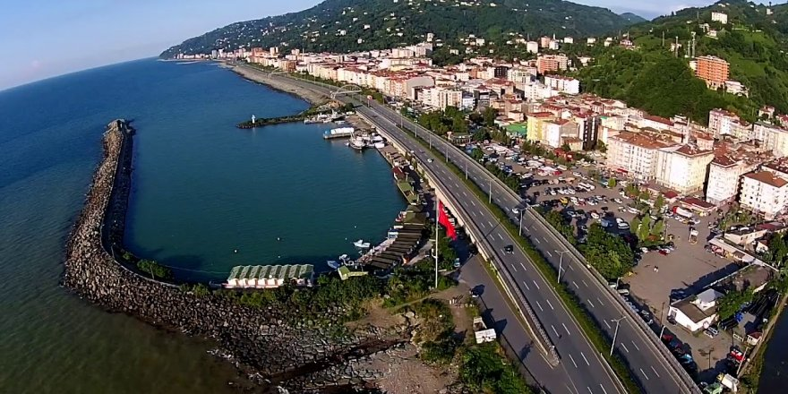

Sırasıyla Roma, Doğu Roma, Trabzon İmparatorluğu ve Osmanlı İmparatorluğu dönemlerinde kullanılan tarihi adı "Mapavri" olup, Özhan Öztürk'e göre Lazca mapavri "Efendiler, rahipler" anlamına gelmektedir. Yazar, Bizans döneminde Rumların, Lazlar ve diğer Kafkas halklarıyla etnik doğu sınırı olduğu ve Hıristiyanlık Trabzon üzerinden Kafkasya'ya yayıldığı için böyle isimlendiriliğini iddia etmiştir.
Rize'nin 18 km doğusunda yer alır. Yüzölçümü 473 km2’dir. Doğudan Pazar, güneyinden Çamlıhemşin ve İkizdere, batıdan Rize merkez ve Güneysu, kuzeyden Karadeniz ile çevrilidir. Dar kıyı şeridi ve hemen arkasında yükselen, denize paralel sıradağlarıyla tipik bir Doğu Karadeniz kıyı ilçesidir. Büyük bir bölümü, Doğu Karadeniz Dağları'nın en yüksek kesimini oluşturan Rize Dağları'yla kaplıdır. Güney ucunda yükselti 2,000 metreyi aşar. Çayeli ve köylerindeki halk çeşitli Türkmen boylarından (Çepniler, Karamanoğulları) oluşur.Bazı dağlık köylerde ise bölgenin yerli halkı olan Hemşinliler oturur. Çayeli'nden sonraki ilçelerde ise (Pazar, Ardeşen, Fındıklı) Lazca da konuşulur.
İlçe ekonomisinin temeli çay üretimine dayanır. Yörede çay üretimi başlamadan önce ana ürün mısırdı. Çayeli’nde hem yerleşime, hem de bitkisel üretime elverişli tek alan dar kıyı şerididir. Nüfusun büyük bir bölümü burada toplandığı gibi, çay ekimi de bu kesimde yoğunlaşmıştır. Türkiye’deki çay ekim alanlarının üçte ikisi Rize ilinde, bunun da %18’lik kısmı Çayeli ilçesinin sınırları içindedir. Madenli kasabasında 1984'ten bu yana bakır madeni çıkarılmaktadır. (Çayeli Bakır İşletmeleri A.Ş./First Quantum Minerals LTD. tarafından) İşletme yöre ekonomisi ve sosyal sorumluluk kapsamında yaptığı çalışmalarla yöre halkı için büyük önem taşımaktadır.
Eski çağlarda Kolhis kültür alanında ve eski Lazlar'ın yerleşim bölgesinde bulunan Mapaura, MS 1. yüzyılda Roma İmparatorluğu egemenliğine girdi. 6. yüzyıldaki Laz Savaşları sonucunda, Roma/Bizans İmparatorluğunun Karadeniz sahilindeki en son yerleşim noktası olma özelliğini kazandı. 1204 yılında Bizans imparatorluğunun geçici süreyle dağılması üzerine kurulan Trabzon İmparatorluğu döneminde de Mapaura/Mapavri Rum egemenliğinin doğudaki son kalesi olarak kaldı. 1461’de II. Mehmed (Fatih)'in Trabzon devletini Osmanlı topraklarına katması üzerine Türk yönetimine girdi. Bunu izleyen yaklaşık 50 yıl boyunca Mapavri Osmanlı Devleti'nin Karadeniz kıyısındaki sınır noktası idi.
1622’de Abaza korsanlarının saldırısına uğrayarak yağmalandı. Şemsettin Sami, Kamasü’l-Alam’da, Mapavri’den "Trabzon vilayetinin Lazistan sancağının Rize kazasına bağlı bir nahiye" olarak söz eder.
I. Dünya Savaşı sırasında iki yıl süreyle Rus işgali altında kalan yöre 9 Mart 1918’de yeniden Türk idaresine girdi. İlçeyi Rize'ye bağlayan sahil yolu Rus işgali döneminde inşa edildi.
Mapavri 1878’de nahiye 1944'te Çaybaşı adıyla ilçe oldu. Sonradan adı Çayeli olarak değiştirildi. Köy adlarının büyük çoğunluğu Rumcadır; ancak az sayıda Lazca ve Hemşince yer adları da vardır. 20. yüzyıl başlarından önce Türkçe yer adı kaydedilmemiştir.